# Loading the packages into R environment
pacman::p_load(sf, spdep, tmap, tidyverse, sfdep)Hands-on Exercise 05
This exercise is a hands-on guide for Global Measures and Local Measures of Spatial Autocorrelation
5.1 Global Measures of Spatial Autocorrelation
5.1.1 Overview
This hands-on exercise will show how to compute Global Measures of Spatial Autocorrelation (GMSA) by using spdep package.
Note
reference:
[r4gdsa Chapter 09: Global Measures of Spatial Autocorrelation](https://r4gdsa.netlify.app/chap09.html)
A key goal of spatial policy is ensuring balanced regional development. This study utilizes spatial statistics to evaluate geographic equity by addressing three consecutive questions:
Is provincial development distributed evenly?
If not, does the uneven distribution display signs of geographic clustering?
If clustering exists, where exactly are these hotspots and lagging zones located?
Two data sets will be used in this hands-on exercise, they are:
Hunan province administrative boundary layer at county level. This is a geospatial data set in ESRI shapefile format.
Hunan_2012.csv: This csv file contains selected Hunan’s local development indicators in 2012.
This analysis relies on sf (geospatial data handling), tidyverse (attribute data wrangling), spdep (spatial weights and autocorrelation modeling), and tmap (choropleth mapping). The following initialization code handles environment deployment by auditing your local library for these packages, installing any missing components, and attaching them to the active R environment.
5.1.2 Loading data into R environment
Import shapefile into R environment
hunan <- st_read(dsn = "data/geospatial",
layer = "Hunan")Simple feature collection with 88 features and 7 fields
Geometry type: POLYGON
Dimension: XY
Bounding box: xmin: 108.7831 ymin: 24.6342 xmax: 114.2544 ymax: 30.12812
Geodetic CRS: WGS 84
First 10 features:
NAME_2 ID_3 NAME_3 ENGTYPE_3 Shape_Leng Shape_Area County
1 Changde 21098 Anxiang County 1.869074 0.10056190 Anxiang
2 Changde 21100 Hanshou County 2.360691 0.19978745 Hanshou
3 Changde 21101 Jinshi County City 1.425620 0.05302413 Jinshi
4 Changde 21102 Li County 3.474325 0.18908121 Li
5 Changde 21103 Linli County 2.289506 0.11450357 Linli
6 Changde 21104 Shimen County 4.171918 0.37194707 Shimen
7 Changsha 21109 Liuyang County City 4.060579 0.46016789 Liuyang
8 Changsha 21110 Ningxiang County 3.323754 0.26614198 Ningxiang
9 Changsha 21111 Wangcheng County 2.292093 0.13049161 Wangcheng
10 Chenzhou 21112 Anren County 2.240739 0.13343936 Anren
geometry
1 POLYGON ((112.0625 29.75523...
2 POLYGON ((112.2288 29.11684...
3 POLYGON ((111.8927 29.6013,...
4 POLYGON ((111.3731 29.94649...
5 POLYGON ((111.6324 29.76288...
6 POLYGON ((110.8825 30.11675...
7 POLYGON ((113.9905 28.5682,...
8 POLYGON ((112.7181 28.38299...
9 POLYGON ((112.7914 28.52688...
10 POLYGON ((113.1757 26.82734...Import csv file into r environment
Import Hunan_2012.csv into R by using read_csv() of readr package. The output is R data frame class.
hunan2012 <- read_csv("data/aspatial/Hunan_2012.csv")# A tibble: 88 × 29
County City avg_wage deposite FAI Gov_Rev Gov_Exp GDP GDPPC GIO
<chr> <chr> <dbl> <dbl> <dbl> <dbl> <dbl> <dbl> <dbl> <dbl>
1 Anhua Yiyang 30544 10967 6832. 457. 2703 13225 14567 9277.
2 Anren Chenz… 28058 4599. 6386. 221. 1455. 4941. 12761 4189.
3 Anxiang Chang… 31935 5517. 3541 244. 1780. 12482 23667 5109.
4 Baojing Hunan… 30843 2250 1005. 193. 1379. 4088. 14563 3624.
5 Chaling Zhuzh… 31251 8241. 6508. 620. 1947 11585 20078 9158.
6 Changning Hengy… 28518 10860 7920 770. 2632. 19886 24418 37392
7 Changsha Chang… 54540 24332 33624 5350 7886. 88009 88656 51361
8 Chengbu Shaoy… 28597 2581. 1922. 161. 1192. 2570. 10132 1681.
9 Chenxi Huaih… 33580 4990 5818. 460. 1724. 7755. 17026 6644.
10 Cili Zhang… 33099 8117. 4498. 500. 2306. 11378 18714 5843.
# ℹ 78 more rows
# ℹ 19 more variables: Loan <dbl>, NIPCR <dbl>, Bed <dbl>, Emp <dbl>,
# EmpR <dbl>, EmpRT <dbl>, Pri_Stu <dbl>, Sec_Stu <dbl>, Household <dbl>,
# Household_R <dbl>, NOIP <dbl>, Pop_R <dbl>, RSCG <dbl>, Pop_T <dbl>,
# Agri <dbl>, Service <dbl>, Disp_Inc <dbl>, RORP <dbl>, ROREmp <dbl>Performing relational join the data
Using left_join() of dplyr update the attribute table of hunan’s SpatialPolygonsDataFrame with the attribute fields of hunan2012 dataframe.
These data fields will be selected for analysis: NAME_2, ID_3, NAME_3, ENGTYPE_3, Country, GDPPC and geometry.
hunan <- left_join(hunan,hunan2012) %>%
select(1:4, 7, 15)Visualising Regional Development Indicator
Using qtm() of tmap package to prepare a basemap and a choropleth map showing the distribution of GDPPC 2012.
equal <- tm_shape(hunan) +
tm_polygons(fill = "GDPPC",
fill.scale = tm_scale_intervals(
style = "equal",
n = 5,
values = "brewer.blues")) +
tm_borders(fiil_alpha = 0.5) +
tm_layout(legend.position = c("left", "bottom"),
main.title = "Equal interval classification")
quantile <- tm_shape(hunan) +
tm_polygons(fill = "GDPPC",
fill.scale = tm_scale_intervals(
style = "quantile",
n = 5)) +
tm_borders(fiil_alpha = 0.5) +
tm_layout(legend.position = c("left", "bottom"),
main.title = "Quantile classification")
tmap_arrange(equal,
quantile,
asp=1,
ncol=2)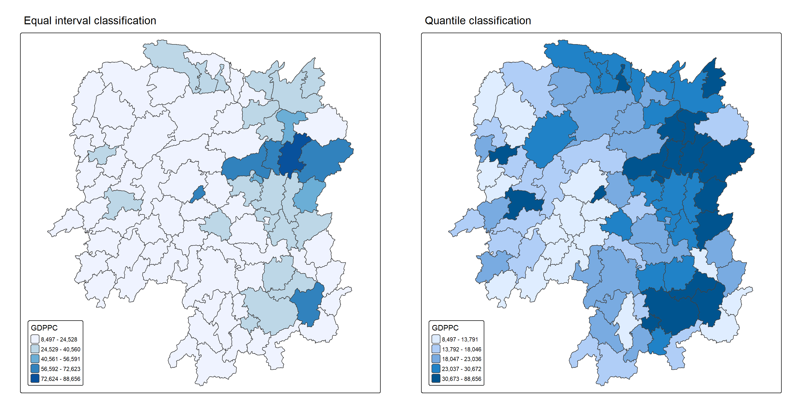
Note
In tmap (specifically within functions like tm_polygons() or tm_fill()), the style parameter controls the data classification method used to split your continuous development data into discrete color bins.
The core difference between style = "equal" (Equal Interval) and style = "quantile" (Quantile) lies in how they calculate the range of each bin versus how many map features end up in each bin.
Here is the direct comparison:
| Classification Style | How It Works | Map Visual Effect | Best Used For |
|---|---|---|---|
"equal" (Equal Interval) |
Divides the total data range (Max - Min) into equal-sized value intervals. | Emphasizes absolute differences and extremes / outliers (e.g., one ultra-rich city might get its own color category). | Data that is already evenly spread out or when you want to highlight absolute thresholds. |
"quantile" (Quantile) |
Distributes an equal number of geographic features (polygons) into each bin. | Results in a balanced, high-contrast map where every color is equally represented. | Data that is highly skewed (e.g., wealth distribution) or when you want to look at relative rankings (e.g., top 20% vs bottom 20%). |
5.1.3 Global Measures of Spatial Autocorrelation
Computing Contiguity Spatial Weights
Computing global spatial autocorrelation requires a spatial weights matrix to formalize neighborhood connections across the study area’s counties. The code below uses spdep::poly2nb() to build a contiguity-based neighbor list from regional boundaries. By default, the queen argument is set to TRUE, meaning the function identifies first-order neighbors sharing any boundary segment or vertex. Setting queen = FALSE limits the definition to regions sharing a contiguous linear border (Rook contiguity).
wm_q <- poly2nb(hunan,
queen=TRUE)
summary(wm_q)Neighbour list object:
Number of regions: 88
Number of nonzero links: 448
Percentage nonzero weights: 5.785124
Average number of links: 5.090909
Link number distribution:
1 2 3 4 5 6 7 8 9 11
2 2 12 16 24 14 11 4 2 1
2 least connected regions:
30 65 with 1 link
1 most connected region:
85 with 11 linksThe summary report above shows that there are 88 area units in Hunan. The most connected area unit has 11 neighbours. There are two area units with only one neighbours, and the most connected region (85) with 11 neighbours.
wm_q <- poly2nb(hunan,
queen=FALSE)
summary(wm_q)Neighbour list object:
Number of regions: 88
Number of nonzero links: 440
Percentage nonzero weights: 5.681818
Average number of links: 5
Link number distribution:
1 2 3 4 5 6 7 8 9 10
2 2 12 20 21 14 11 3 2 1
2 least connected regions:
30 65 with 1 link
1 most connected region:
85 with 10 linksRow-standardised weights matrix
The next step involves assigning weights to the neighbor structures using a row-standardized approach (style = “W”). This method assigns an equal fractional weight (1/ number of neighbors) to each adjacent county, allowing the spatial lag to represent the local average. A known limitation of row-standardization is its vulnerability to edge effects; administrative units on the periphery of the study area have fewer neighboring connections, potentially skewing the calculated spatial autocorrelation. While this example implements style = “W” for baseline interpretation, more robust configurations, such as basic binary weights (style = “B”), are available to address these geographic boundary limits.
rswm_q <- nb2listw(wm_q,
style="W",
zero.policy = TRUE)
rswm_qCharacteristics of weights list object:
Neighbour list object:
Number of regions: 88
Number of nonzero links: 440
Percentage nonzero weights: 5.681818
Average number of links: 5
Weights style: W
Weights constants summary:
n nn S0 S1 S2
W 88 7744 88 38.46432 365.91865.1.4 Global Measures of Spatial Autocorrelation: Moran’s I
Maron’s I test
Note
Global Moran’s I is the foundational and most widely used metric for quantifying global spatial autocorrelation. It measures the overall degree to which similar values of a variable cluster together, disperse, or distribute randomly across a defined geographic space.
It is the spatial equivalent of Pearson’s correlation coefficient, mathematically translating Tobler’s First Law of Geography: “Everything is related to everything else, but near things are more related than distant things.”
moran.test(hunan$GDPPC,
listw=rswm_q,
zero.policy = TRUE,
na.action=na.omit)
Moran I test under randomisation
data: hunan$GDPPC
weights: rswm_q
Moran I statistic standard deviate = 4.8103, p-value = 7.535e-07
alternative hypothesis: greater
sample estimates:
Moran I statistic Expectation Variance
0.308366499 -0.011494253 0.004421564 The statistical conclusion is that you reject the null hypothesis of complete spatial randomness at a \(>99.9\%\) confidence level (\(p < 0.001\)).
Because the p-value (\(1.095 \times 10^{-6}\)) is substantially smaller than the standard alpha level of 0.05, and the Z-score (standard deviate) is 4.7351, the results are highly statistically significant. It can be concluded in favor of the alternative hypothesis: the data exhibits significant positive spatial autocorrelation.
Based on this output, there is highly significant positive spatial autocorrelation in the GDP per capita (GDPPC) across the measured regions in Hunan.
The data strongly rejects the null hypothesis of Complete Spatial Randomness (CSR) in favor of the alternative hypothesis that the values are spatially clustered.
Statistically, this confirms that the observed clustering of similar GDPPC values (Moran’s I of 0.3007) is not due to random chance.
Computing Monte Carlo Moran’s I
Note
Monte Carlo Moran’s I is a simulation-based (permutation) method used to determine the statistical significance of the Moran’s I statistic.
Instead of relying on standard analytical formulas—which often assume your underlying data follows a normal distribution—the Monte Carlo approach uses brute-force computation to build an empirical “null distribution” specific to your exact dataset and spatial weights.
set.seed(1234)
bperm= moran.mc(hunan$GDPPC,
listw=rswm_q,
nsim=999,
zero.policy = TRUE,
na.action=na.omit)
bperm
Monte-Carlo simulation of Moran I
data: hunan$GDPPC
weights: rswm_q
number of simulations + 1: 1000
statistic = 0.30837, observed rank = 1000, p-value = 0.001
alternative hypothesis: greaterThe statistical conclusion is that you reject the null hypothesis of Complete Spatial Randomness at a 99.9% confidence level (\(p = 0.001\)).
Because the p-value (0.001) is strictly less than the standard significance levels (such as 0.05 or 0.01), the result is highly statistically significant. You conclude that the data exhibits significant positive spatial autocorrelation.
Here is what the specific Monte Carlo metrics reveal about your data:
Observed Rank = 1000: The simulation shuffled your GDPPC data across the map 999 times. Your actual observed Moran’s I statistic (0.30837) ranked 1000th out of the 1000 total iterations (999 random + 1 observed). This means your actual data was more spatially clustered than every single one of the 999 random permutations.
P-value = 0.001: This is the absolute minimum possible p-value when running 999 simulations. It is calculated by taking the number of instances equal to or more extreme than your observation (which is just 1—your actual observation) and dividing it by the total iterations (1000).
This non-parametric test strongly confirms the findings of your previous analytical test: the geographic clustering of high-GDP and low-GDP counties in Hunan province is genuine and practically impossible to generate by random geographic chance.
Visualising Monte Carlo Moran’s I
mean(bperm$res[1:999])[1] -0.01501115var(bperm$res[1:999])[1] 0.004431934summary(bperm$res[1:999]) Min. 1st Qu. Median Mean 3rd Qu. Max.
-0.18588 -0.06228 -0.02137 -0.01501 0.02677 0.27294 hist(bperm$res,
freq=TRUE,
breaks=20,
xlab="Simulated Moran's I")
abline(v=0,
col="red") 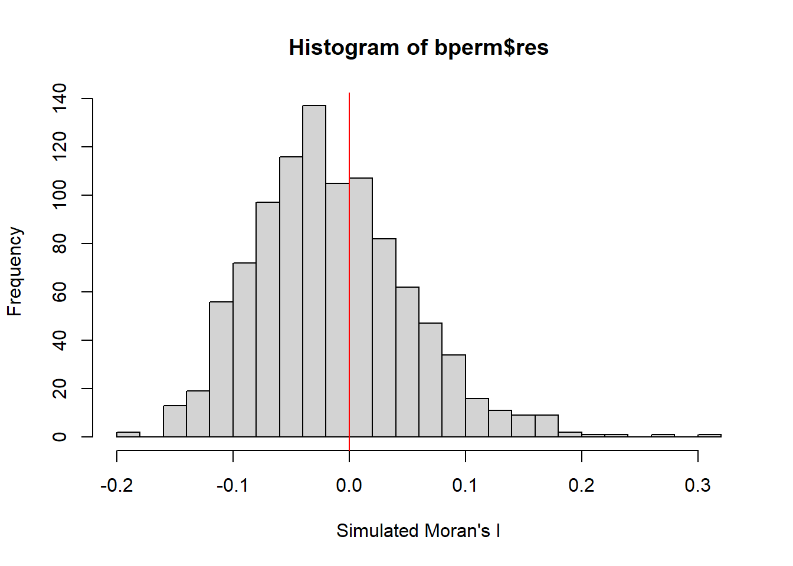
Plotting using ggplot2 package
library(ggplot2)
# ggplot2 requires data to be in a data frame
ggplot(data.frame(Simulated_I = bperm$res), aes(x = Simulated_I)) +
geom_histogram(bins = 20, color = "black", fill = "lightgray") +
geom_vline(xintercept = 0, color = "red") +
labs(x = "Simulated Moran's I",
y = "Frequency") +
theme_minimal()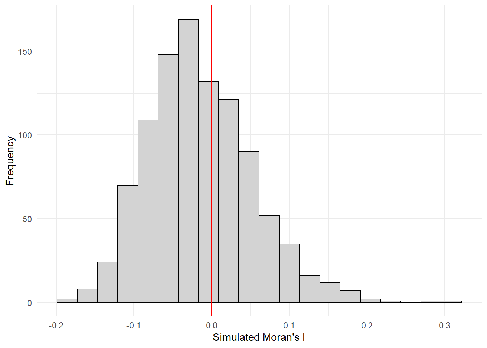
5.2 Local Measures of Spatial Autocorrelation
5.2.1 Overview
Unlike global spatial statistics that provide a single summary score for an entire map, Local Measures of Spatial Autocorrelation (LMSA) calculate a unique score for every individual location based on its immediate neighbors. This allows you to pinpoint the exact locations of clusters and outliers hidden within your map.
The two main local methods are:
LISA (Local Indicators of Spatial Association): These mathematically break down global statistics into local scores to find specific clusters and spatial outliers.
Getis-Ord’s Gi-statistics: An alternative method specifically designed to highlight geographic hot spots and cold spots.
In this exercise, you will use the sfdep package in R to run these local calculations. By the end, you will be able to:
Import spatial boundaries using
sfand tabular CSV data usingreadr.Merge the datasets together using
dplyr.Calculate LISA to detect local clusters and outliers.
Calculate Getis-Ord’s Gi-statistics to identify hot and cold spots.
Visualize your results on a map using
tmap.
5.2.2 Setting
Analytical question
A primary goal for local governments and urban planners is ensuring that economic development is distributed equally across a region. This study uses spatial statistics to test whether that goal is being met by asking three progressive questions:
Is economic development evenly distributed geographically?
If not, are there signs of spatial clustering?
If clusters do exist, exactly where are they located?
To answer these questions, this case study examines the geographic distribution of a specific economic indicator—GDP per capita—across Hunan Province, China.
Visulisation the data
equal <- tm_shape(hunan) +
tm_polygons(fill = "GDPPC",
fill.scale = tm_scale_intervals(
style = "equal",
n = 5,
values = "brewer.blues"),
fill.legend = tm_legend(
title = "GDPPC",
position = tm_pos_in(
"left", "bottom"))) +
tm_borders(fill_alpha = 0.5) +
tm_title("Equal interval classification")
quantile <- tm_shape(hunan) +
tm_polygons(fill = "GDPPC",
fill.scale = tm_scale_intervals(
style = "quantile",
n = 5,
values = "brewer.blues"),
fill.legend = tm_legend(
title = "GDPPC",
position = tm_pos_in(
"left", "bottom"))) +
tm_borders(fill_alpha = 0.5) +
tm_title("Quantile interval classification")
tmap_arrange(equal,
quantile,
asp=1,
ncol=2)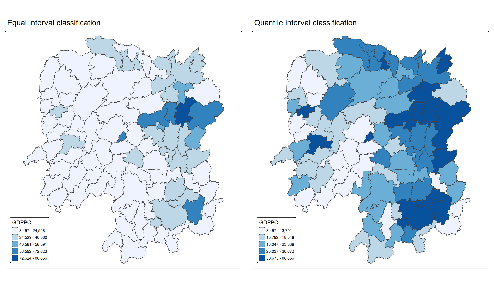
5.2.3 Local Indicators of Spatial Association (LISA)
This session will show you how to apply LISA, especially local Moran’I to detect cluster and/or outlier from GDP per Capita 2012 of Hunan Province, China.
Computing contiguity spatial weights
Before we can compute the local spatial autocorrelation statistics, we need to construct a spatial weights of the study area. The spatial weights is used to define the neighbourhood relationships between the geographical units (i.e. county) in the study area.
Note
st_contiguity() of sfdep package is used to compute contiguity weight matrices for the study area. This function builds a neighbours list based on regions with contiguous boundaries. If you look at the documentation you will see that you can pass a “queen” argument that takes TRUE or FALSE as options. If you do not specify this argument the default is set to TRUE, that is, if you don’t specify queen = FALSE this function will return a list of first order neighbours using the Queen criteria.
Next, st_weights() is used to calculate polygon spatial weights from the nb list.
st_weights() provides three arguments, they are:
nb: A neighbor list object as created by
st_neighbors().style: Default “W” for row standardized weights. This value can also be “B”, “C”, “U”, “minmax”, and “S”. B is the basic binary coding, W is row standardised (sums over all links to n), C is globally standardised (sums over all links to n), U is equal to C divided by the number of neighbours (sums over all links to unity), while S is the variance-stabilizing coding scheme proposed by Tiefelsdorf et al. 1999, p. 167-168 (sums over all links to n).
allow_zero: If TRUE, assigns zero as lagged value to zone without neighbors.
wm_q <- hunan %>%
mutate(nb = st_contiguity(geometry),
wt = st_weights(
nb, style = "W"),
.before = 1) summary(wm_q$nb)Neighbour list object:
Number of regions: 88
Number of nonzero links: 448
Percentage nonzero weights: 5.785124
Average number of links: 5.090909
Link number distribution:
1 2 3 4 5 6 7 8 9 11
2 2 12 16 24 14 11 4 2 1
2 least connected regions:
30 65 with 1 link
1 most connected region:
85 with 11 linksRow-standardised weights matrix
we need to assign weights to each neighboring polygon. In our case, each neighboring polygon will be assigned equal weight (style=“W”). This is accomplished by assigning the fraction 1/(#ofneighbors) to each neighboring county then summing the weighted income values. While this is the most intuitive way to summaries the neighbors’ values it has one drawback in that polygons along the edges of the study area will base their lagged values on fewer polygons thus potentially over- or under-estimating the true nature of the spatial autocorrelation in the data. For this example, we’ll stick with the style=“W” option for simplicity’s sake but note that other more robust options are available, notably style=“B”.
Note
The input of
nb2listw()must be an object of class nb. The syntax of the function has two major arguments, namely style and zero.poly.style can take values “W”, “B”, “C”, “U”, “minmax” and “S”. B is the basic binary coding, W is row standardised (sums over all links to n), C is globally standardised (sums over all links to n), U is equal to C divided by the number of neighbours (sums over all links to unity), while S is the variance-stabilizing coding scheme proposed by Tiefelsdorf et al. 1999, p. 167-168 (sums over all links to n).
If zero policy is set to TRUE, weights vectors of zero length are inserted for regions without neighbour in the neighbours list. These will in turn generate lag values of zero, equivalent to the sum of products of the zero row t(rep(0, length=length(neighbours))) %*% x, for arbitrary numerical vector x of length length(neighbours). The spatially lagged value of x for the zero-neighbour region will then be zero, which may (or may not) be a sensible choice.
Computing local Moran’s I
The local_moran() function of sfdep will be used. It computes Ii values, given a set of zi values and a listw object providing neighbour weighting information for the polygon associated with the zi values.
set.seed(1234)
lisa <- wm_q %>%
mutate(local_moran = local_moran(
GDPPC, nb, wt, nsim = 99),
.before = 1) %>%
unnest(local_moran)glimpse(lisa)Rows: 88
Columns: 21
$ ii <dbl> -1.468468e-03, 2.587817e-02, -1.198765e-02, 1.022468e-03,…
$ eii <dbl> 1.472724e-03, -1.337157e-02, 2.542108e-03, -9.522978e-05,…
$ var_ii <dbl> 5.187992e-04, 1.413972e-02, 1.109689e-01, 4.768012e-06, 1…
$ z_ii <dbl> -0.12912898, 0.33007787, -0.04361717, 0.51186518, 0.33919…
$ p_ii <dbl> 8.972556e-01, 7.413411e-01, 9.652096e-01, 6.087454e-01, 7…
$ p_ii_sim <dbl> 0.80, 0.98, 0.92, 0.56, 0.58, 0.86, 0.06, 0.12, 0.02, 0.2…
$ p_folded_sim <dbl> 0.40, 0.49, 0.46, 0.28, 0.29, 0.43, 0.03, 0.06, 0.01, 0.1…
$ skewness <dbl> -1.0560692, -1.0439328, 0.8429629, 0.8423923, 1.3810032, …
$ kurtosis <dbl> 1.31492710, 0.76654076, 0.12251048, 0.37514702, 2.3883407…
$ mean <fct> Low-High, Low-Low, High-Low, High-High, High-High, High-L…
$ median <fct> High-High, High-High, High-High, High-High, High-High, Hi…
$ pysal <fct> Low-High, Low-Low, High-Low, High-High, High-High, High-L…
$ nb <nb> <2, 3, 4, 57, 85>, <1, 57, 58, 78, 85>, <1, 4, 5, 85>, <1,…
$ wt <list> <0.2, 0.2, 0.2, 0.2, 0.2>, <0.2, 0.2, 0.2, 0.2, 0.2>, <0…
$ NAME_2 <chr> "Changde", "Changde", "Changde", "Changde", "Changde", "C…
$ ID_3 <int> 21098, 21100, 21101, 21102, 21103, 21104, 21109, 21110, 2…
$ NAME_3 <chr> "Anxiang", "Hanshou", "Jinshi", "Li", "Linli", "Shimen", …
$ ENGTYPE_3 <chr> "County", "County", "County City", "County", "County", "C…
$ County <chr> "Anxiang", "Hanshou", "Jinshi", "Li", "Linli", "Shimen", …
$ GDPPC <dbl> 23667, 20981, 34592, 24473, 25554, 27137, 63118, 62202, 7…
$ geometry <POLYGON [°]> POLYGON ((112.0625 29.75523..., POLYGON ((112.228…Mapping the local Moran’s I value
tm_shape(lisa) +
tm_polygons(fill = "ii",
fill.scale = tm_scale_intervals(
style = "pretty",
n = 5,
values = "brewer.RdBu"),
fill.legend = tm_legend(
title = "Local Morans'I",
position = tm_pos_out())) +
tm_borders(fill_alpha = 0.5) +
tm_title("Loal Morans'I of GDPPC (Queen's method)", size = 2.5)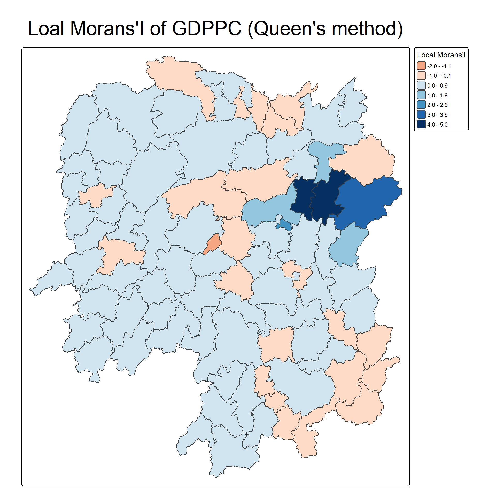
Mapping local Moran’s I p-values
tm_shape(lisa) +
tm_polygons(fill = "p_ii",
fill.scale = tm_scale_intervals(
breaks = c(-Inf, 0.001, 0.01, 0.05, 0.1, Inf),
values = "-brewer.Reds"),
fill.legend = tm_legend(
title = "p-value",
position = tm_pos_out())) +
tm_borders(fill_alpha = 0.5) +
tm_title("p-values of Loal Moran's I of GDPPC (Queen's method)", size = 2.5)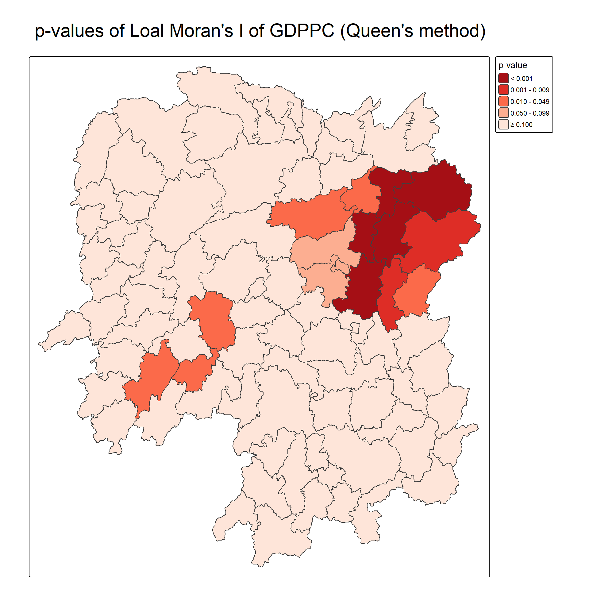
Mapping both local Moran’s I values and p-values
ii.map <- tm_shape(lisa) +
tm_polygons(fill = "ii",
fill.scale = tm_scale_intervals(
style = "pretty",
n = 5,
values = "brewer.RdBu"),
fill.legend = tm_legend(
title = "Local Moran's I",
position = tm_pos_in(
"left", "bottom"))) +
tm_borders(fill_alpha = 0.5) +
tm_title("Loal Moran's I of GDPPC (Queen's method)", size = 2)
p_ii.map <- tm_shape(lisa) +
tm_polygons(fill = "p_ii",
fill.scale = tm_scale_intervals(
breaks = c(-Inf, 0.001, 0.01, 0.05, 0.1, Inf),
values = "-brewer.Reds"),
fill.legend = tm_legend(
title = "p-value",
position = tm_pos_in("left", "bottom")
)) +
tm_borders(fill_alpha = 0.5) +
tm_title("p-values of Loal Moran's I of GDPPC (Queen's method)", size = 2)
tmap_arrange(ii.map, p_ii.map, asp=1, ncol=2)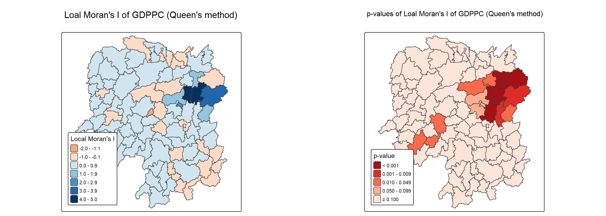
Preparing and Visualising LISA map
Visualizing LISA involves creating maps that highlight significant spatial patterns, such as hot spots (high values clustered together) and cold spots (low values clustered together), as well as identifying spatial outliers. Common methods include choropleth maps showing LISA values, Moran scatterplots which depict local spatial autocorrelation for individual locations, and hot spot analysis maps.
The LISA Cluster Map shows the significant locations color coded by type of spatial autocorrelation. The first step before we can generate the LISA cluster map is to plot the Moran scatterplot.
Plotting Moran scatterplot
A Moran Scatterplot is a graphical tool in spatial analysis that visualizes the relationship between a variable’s values and the average values of its neighboring locations (its spatial lag) to identify spatial autocorrelation. By plotting standardized values of the variable on the x-axis and its spatial lag on the y-axis, the plot’s slope represents Moran’s I, revealing patterns of high-high or low-low value clusters and high-low or low-high value outliers.
lisa <- lisa %>%
mutate(lag_GDPPC = st_lag(
GDPPC, nb, wt),
.before = 1) %>%
unnest(lag_GDPPC)Using ggplot to plot the Moran Scatterplot of GDPPC against it spatial lag version
ggplot(data = lisa,
aes(x = GDPPC,
y = lag_GDPPC)) +
geom_point() +
geom_smooth(method = "lm",
se = FALSE,
color = "red") +
labs(x = "GDPPC",
y = "Spatial Lag of GDPPC",
title = "Moran Scatterplot") +
theme_minimal()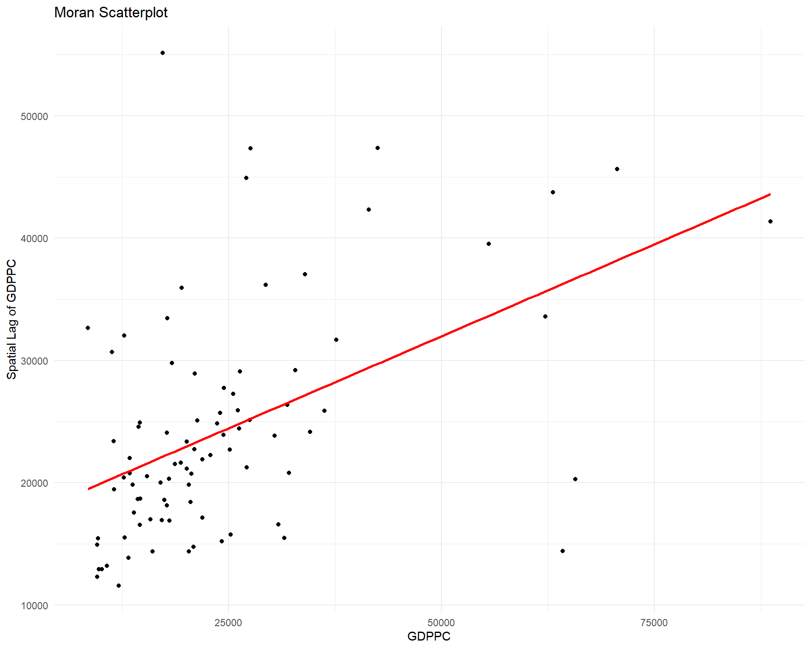
Upgrade the plot with LISA quadrants
ggplot(data = lisa,
aes(x = GDPPC,
y = lag_GDPPC,
color = mean)) +
geom_point(size = 2) +
geom_smooth(method = "lm",
se = FALSE,
color = "black") +
geom_hline(yintercept=mean(lisa$lag_GDPPC), lty=2) +
geom_vline(xintercept=mean(lisa$GDPPC), lty=2) +
scale_color_manual(
values = c("High-High" = "red",
"Low-Low" = "blue",
"Low-High" = "lightblue",
"High-Low" = "pink")) +
labs(x = "GDPPC",
y = "Spatial Lag of GDPPC",
title = "Moran Scatterplot with LISA Quadrants") +
theme_minimal()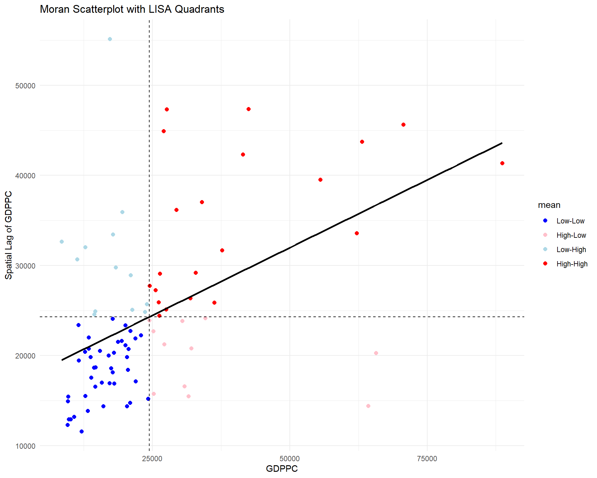
Plotting Moran scatterplot with standardised variable
lisa <- lisa %>%
mutate(z_GDPPC = scale(GDPPC),
z_lag_GDPPC = scale(lag_GDPPC),
.before = 1)plot the Moran scatterplot again
ggplot(data = lisa,
aes(x = z_GDPPC,
y = z_lag_GDPPC,
color = mean)) +
geom_point(size = 2) +
geom_smooth(method = "lm",
se = FALSE,
color = "black") +
geom_hline(yintercept=mean(lisa$z_lag_GDPPC), lty=2) +
geom_vline(xintercept=mean(lisa$z_GDPPC), lty=2) +
scale_color_manual(
values = c("High-High" = "red",
"Low-Low" = "blue",
"Low-High" = "lightblue",
"High-Low" = "pink")) +
labs(x = "Standardised GDPPC",
y = "Standardised Spatial Lag of GDPPC",
title = "Standardised Moran Scatterplot with LISA Quadrants") +
theme_minimal()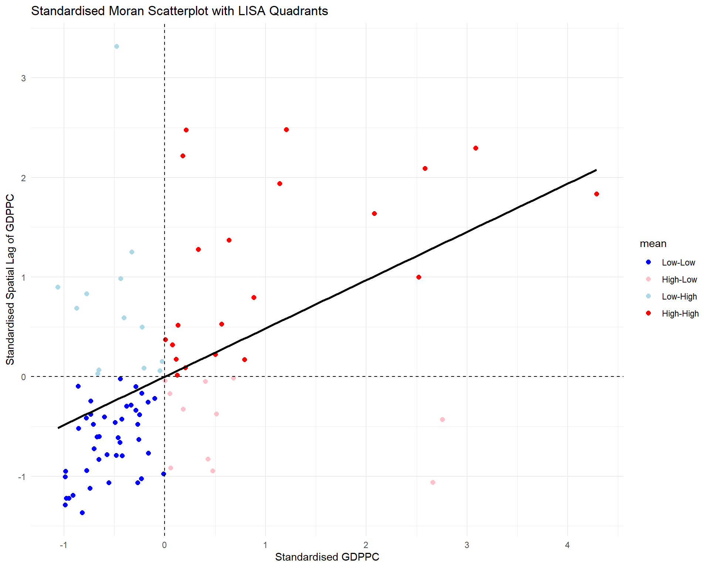
Preparing LISA map classes
Derives the spatially lagged variable of interest and centers the spatially lagged variable around its mean.
signif <- 0.05 Plotting and visualising LISA map
Note
By default, the LISA classes are stored in mean, median and pysal fields of lisa sf data frame. To prepare the LISA map, we will derive a new field called LISA-cluster from either one of these three fields
lisa <- lisa %>%
mutate(
LISA_cluster = ifelse(
p_ii < 0.05,
as.character(mean),
"Insignificant"),
LISA_cluster = factor(
LISA_cluster,
levels = c("Insignificant", "Low-Low", "Low-High", "High-Low", "High-High")
)
)
Note
a new class called Insignificant has been added for the records where by p_ii > 0.05.
Plot LISA map
lisa_map <- tm_shape(lisa) +
tm_polygons(
fill = "LISA_cluster",
fill.scale = tm_scale_categorical(
values = c(
"grey80", # Insignificant
"blue", # Low-Low
"lightblue", # Low-High
"pink", # High-Low
"red" # High-High
)
),
fill.legend = tm_legend(
title = "LISA Cluster",
position = tm_pos_in("left", "bottom"))
) +
tm_borders() +
tm_title("Local Moran's I Clusters (p < 0.05)", size = 3)
lisa_map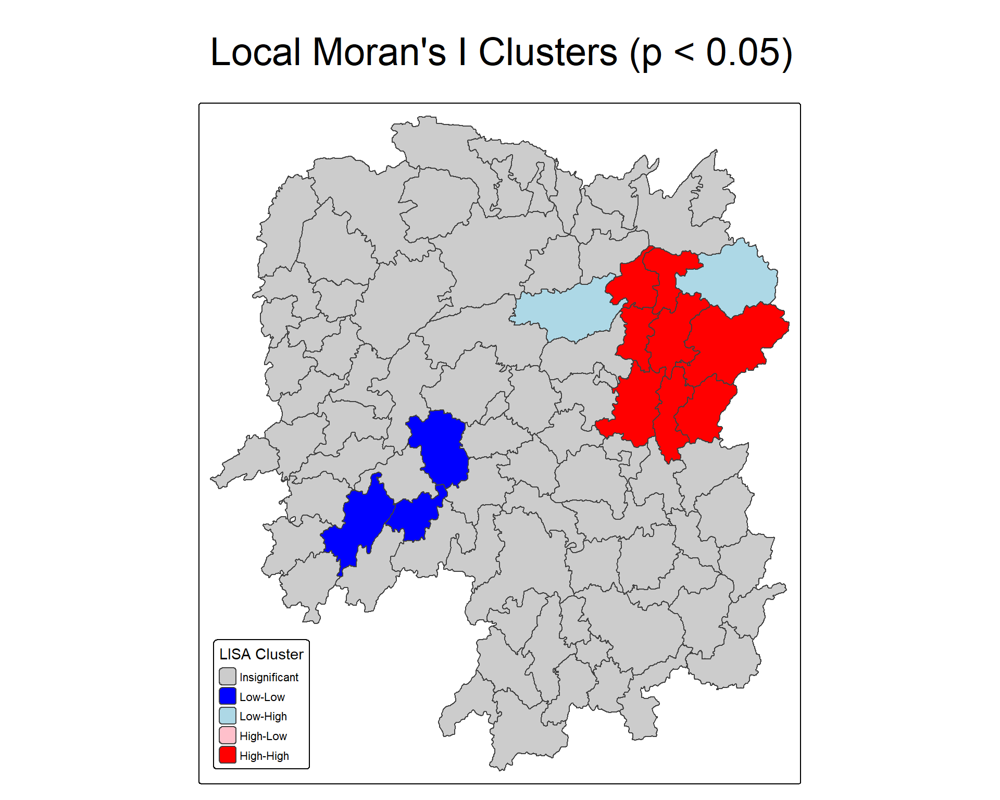
For effective interpretation, it is better to plot both the local Moran’s I values map and its corresponding p-values map next to each other.
ii.map <- tm_shape(lisa) +
tm_polygons(fill = "ii",
fill.scale = tm_scale_intervals(
style = "pretty",
n = 5,
values = "brewer.RdBu"),
fill.legend = tm_legend(
title = "Local Moran's I",
position = tm_pos_in(
"left", "bottom"))) +
tm_borders(fill_alpha = 0.5) +
tm_title("Loal Moran's I of GDPPC (Queen's method)", size = 2)
lisa_map <- tm_shape(lisa) +
tm_polygons(
fill = "LISA_cluster",
fill.scale = tm_scale_categorical(
values = c(
"grey80", # Insignificant
"blue", # Low-Low
"lightblue", # Low-High
"pink", # High-Low
"red" # High-High
)
),
fill.legend = tm_legend(
title = "LISA Cluster",
position = tm_pos_in("left", "bottom"))
) +
tm_borders() +
tm_title("Local Moran's I Clusters (p < 0.05)", size = 2)
lisa_map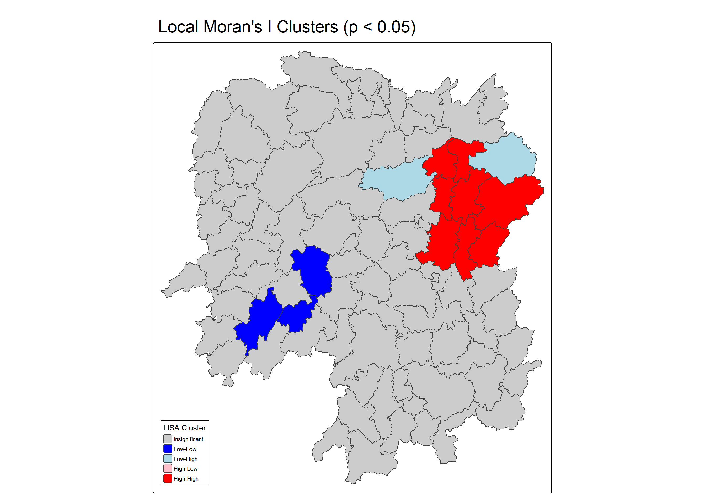
tmap_arrange(ii.map, lisa_map, asp=1, ncol=2)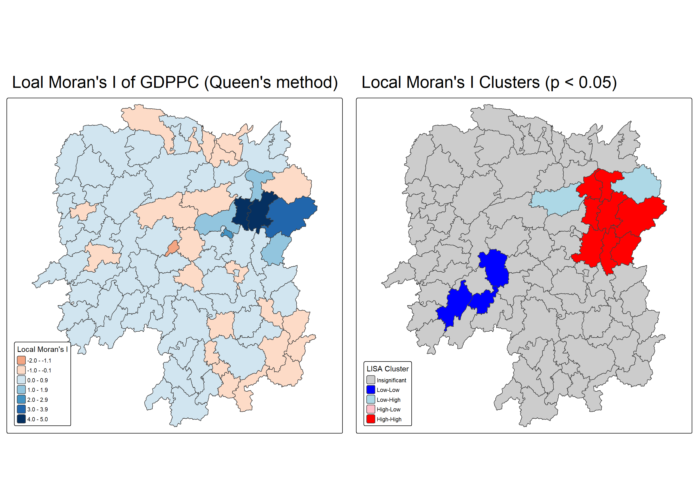
5.2.4 Hot Spots and Cold Spots Analysis (HCSA)
Hot Spot and Cold Spot Analysis (HCSA) uses spatial statistics to identify statistically significant clusters within geographic data.
Hot Spots: Areas where high values are concentrated and surrounded by other high values.
Cold Spots: Areas where low values are concentrated and surrounded by other low values.
Using methods like the Getis-Ord Gi* statistic, HCSA determines if these patterns (such as regional clusters of high or low GDP per capita) are statistically significant or merely random noise.
The analysis involves four steps:
Deriving a spatial weight matrix.
Computing Gi* statistics.
Mapping the Gi* statistics.
Communicating the results.
Deriving distance weight matrix
Whist the spatial autocorrelation considered units which shared borders, for Getis-Ord Gi* statistics, we are defining neighbours based on distance.
There are two type of distance-based proximity matrix, they are:
fixed distance weight matrix,
adaptive distance weight matrix, and
inverse distance weights.
Computing fixed distance weights
In this section, you will learn how to compute fixed distance weight matrix by using st_dist_band() and st_weights() of sfdep package.
Firstly, we need to determine the upper limit for distance band
ct <- critical_threshold(st_geometry(hunan))
ct[1] 62.82614The summary report shows that the largest first nearest neighbour distance is 62.83 km, so using this as the upper threshold gives certainty that all units will have at least one neighbour.
Compute the fixed distance weight based on the threshold value computed above.
hunan_fdw <- hunan %>%
mutate(nb = include_self(
st_dist_band(
st_geometry(geometry),
upper = ct)),
wt = st_weights(nb,
style = "W"),
.before = 1) Computing adaptive distance weights
One of the characteristics of fixed distance weight matrix is that more densely settled areas (usually the urban areas) tend to have more neighbours and the less densely settled areas (usually the rural counties) tend to have lesser neighbours. Having many neighbours smooth the neighbour relationship across more neighbours.
It is possible to control the numbers of neighbours directly using k-nearest neighbours, either accepting asymmetric neighbours or imposing symmetry as shown in the code chunk below.
hunan_adw <- hunan %>%
mutate(nb = include_self(
st_knn(
st_geometry(geometry),
k = 6)),
wt = st_weights(
nb, style = "W"),
.before = 1)Computing local Gi*
Local Gi* (pronounced “G-i-star”) is a Getis-Ord statistic used in spatial analysis to identify statistically significant hot spots and cold spots of high or low attribute values within a dataset. It measures the spatial clustering of values by comparing the total value within a specified neighborhood to the global total, producing a Z-score and p-value for each location to determine the likelihood that the observed pattern is not due to random chance.
HCSA_fdw <- hunan_fdw %>%
mutate(
gistar = local_gstar_perm(
GDPPC, nb, wt, nsim = 99),
.before = 1) %>%
unnest(gistar)Preparing and Visualising HCSA Map
Mapping Gi* with fix distance weights
Thematic mapping functions of tmaps are used to prepare a choropleth map showing the distribution of Gi* values.
tm_shape(HCSA_fdw) +
tm_polygons(fill = "gi_star",
fill.scale = tm_scale_intervals(
style = "pretty",
n = 6,
values = "brewer.rd_bu"),
fill.legend = tm_legend(
title = "Gi*",
position = tm_pos_out())) +
tm_borders(fill_alpha = 0.5) +
tm_title("Gi* of GDPPC (Fixed Bandwidth d = 60799.91m)", size = 2)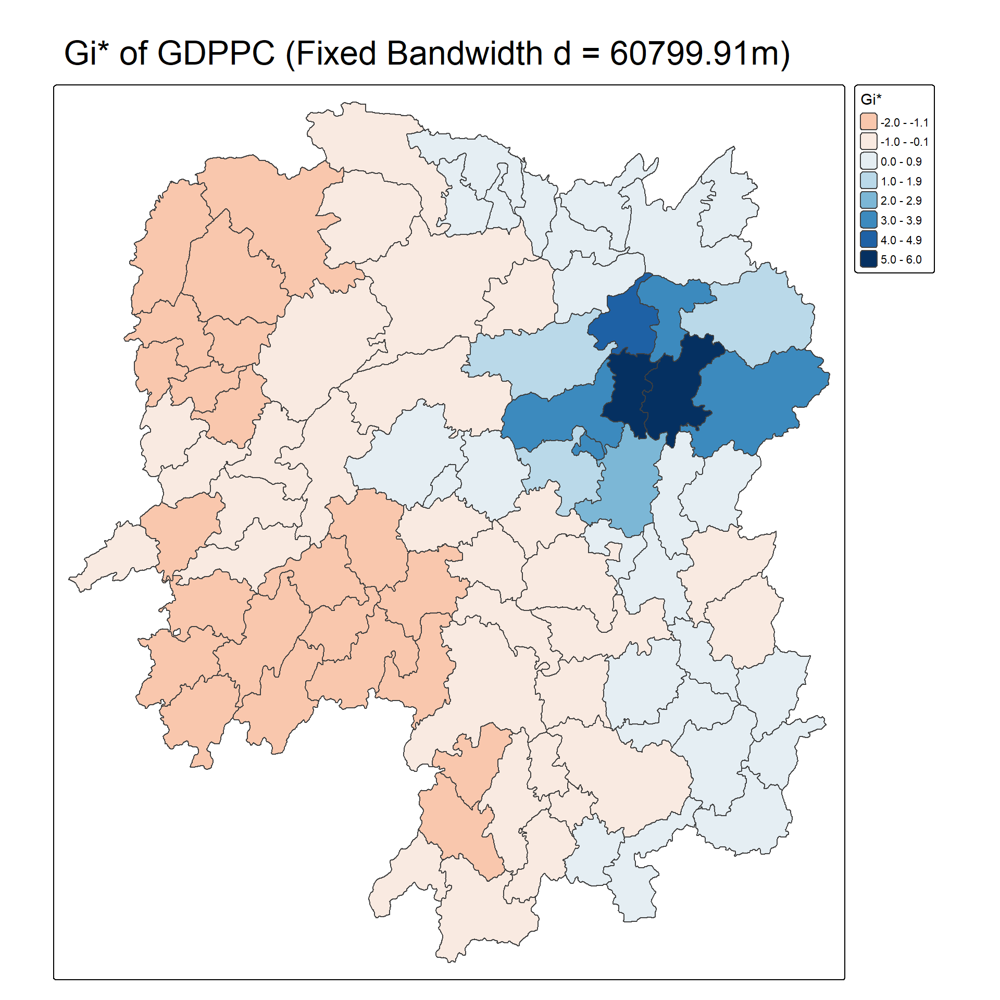
Mapping local Gi* p-values
The choropleth shows there is evidence for both positive and negative Ii values. However, it is useful to consider the p-values for each of these values, as consider above.
tm_shape(HCSA_fdw) +
tm_polygons(fill = "p_sim",
fill.scale = tm_scale_intervals(
breaks = c(-Inf, 0.001, 0.01, 0.05, 0.1, Inf),
values = "-brewer.Reds"),
fill.legend = tm_legend(
title = "simulated p-value",
position = tm_pos_out())) +
tm_borders(fill_alpha = 0.5) +
tm_title("p-values of local Gi* of GDPPC (Fixed distance)", size = 2)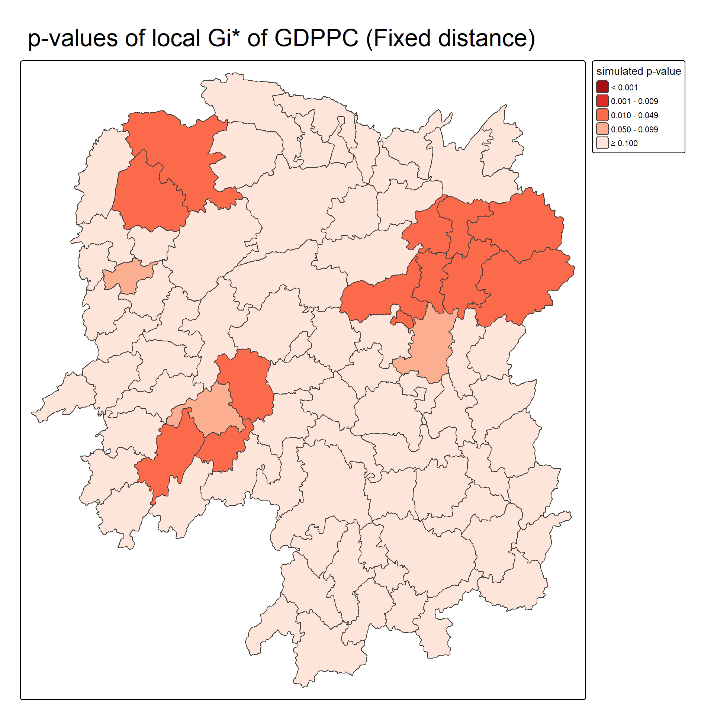
Mapping both Gi* values and p-values
For effective interpretation, it is better to plot both the Gi* values map and its corresponding p-values map next to each other.
Gi_star_map <- tm_shape(HCSA_fdw) +
tm_polygons(fill = "gi_star",
fill.scale = tm_scale_intervals(
style = "pretty",
n = 5,
values = "-brewer.rd_bu"),
fill.legend = tm_legend(
title = "local Gi*",
position = tm_pos_in(
"left", "bottom"))) +
tm_borders(fill_alpha = 0.5) +
tm_title("Local Gi* of GDPPC", size =2)
p_values_map <- tm_shape(HCSA_fdw) +
tm_polygons(fill = "p_sim",
fill.scale = tm_scale_intervals(
breaks = c(0, 0.001, 0.01, 0.05, 0.1, 1),
values = "-brewer.reds"),
fill.legend = tm_legend(
title = "p-value",
position = tm_pos_in("left", "bottom")
)) +
tm_borders(fill_alpha = 0.5) +
tm_title("p-values of local Gi* of GDPPC (fixed distance)", size =2)
tmap_arrange(Gi_star_map, p_values_map, asp=1, ncol=2)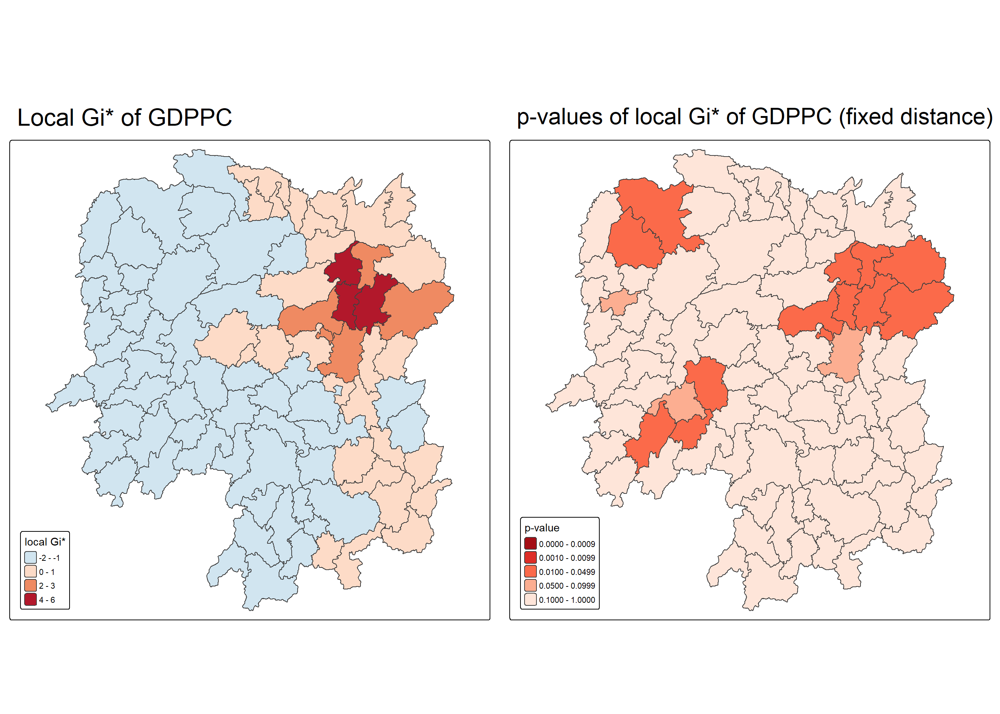
Plotting and visualising HCSA Map
By default, the HCSA classes are stored in cluster field of HCSA_fdw sf data frame. To prepare the HSCA map, we will derive a new field called HCSA_cluster from cluster field
HCSA_fdw <- HCSA_fdw %>%
mutate(HCSA_cluster = case_when(
p_sim > 0.05 ~ "Insignificant",
p_sim <= 0.05 & cluster == "High" ~ "Hot spot",
p_sim <= 0.05 & cluster == "Low" ~ "Cold spot",
TRUE ~ "Other"),
HCSA_cluster = factor(
HCSA_cluster,
levels = c("Insignificant", "Hot spot", "Cold spot")
),
.before = 1
)Now, we can plot the HCSA map
HCSA_map <- tm_shape(HCSA_fdw) +
tm_polygons(
fill = "HCSA_cluster",
fill.scale = tm_scale_categorical(
values = c(
"grey80", # Insignificant
"red", # Low-Low
"blue" # High-High
)
),
fill.legend = tm_legend(
title = "HSCA Cluster",
position = tm_pos_in("left", "bottom"))
) +
tm_borders() +
tm_title("HCSA Clusters (p < 0.05)", size = 2)
HCSA_map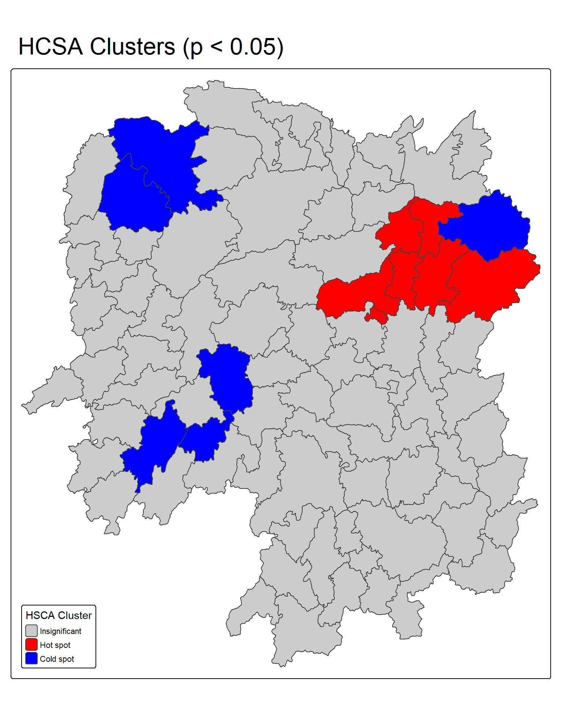
plot both the local Gi* values map and its corresponding HCSA map next to each other.
tmap_arrange(Gi_star_map, HCSA_map, asp=1, ncol=2)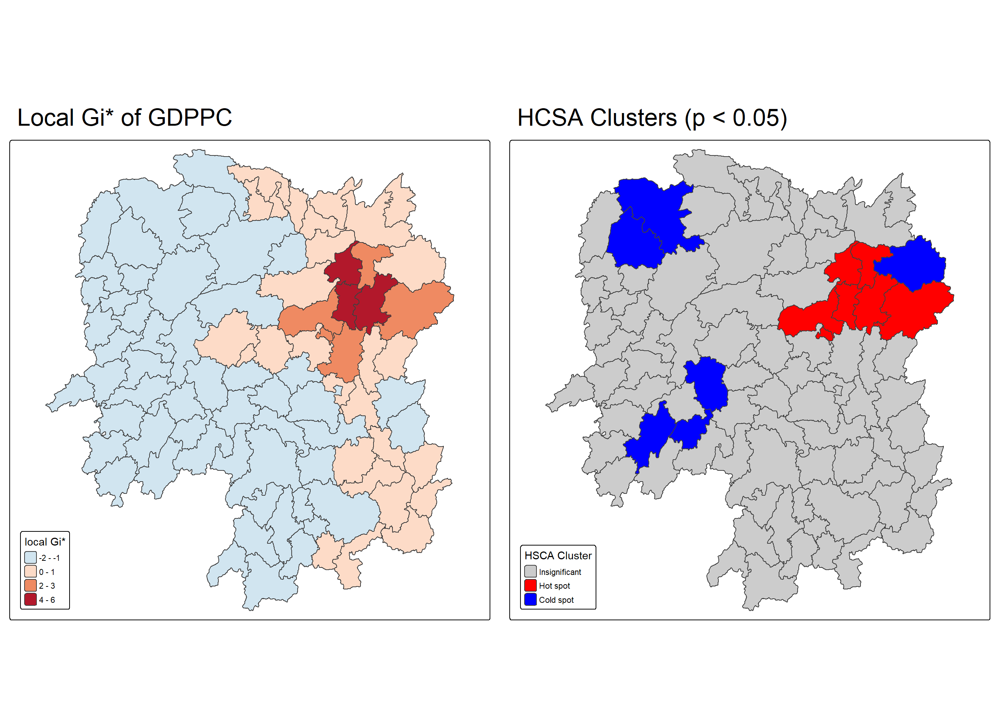